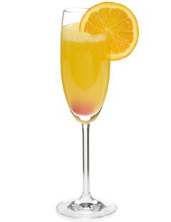
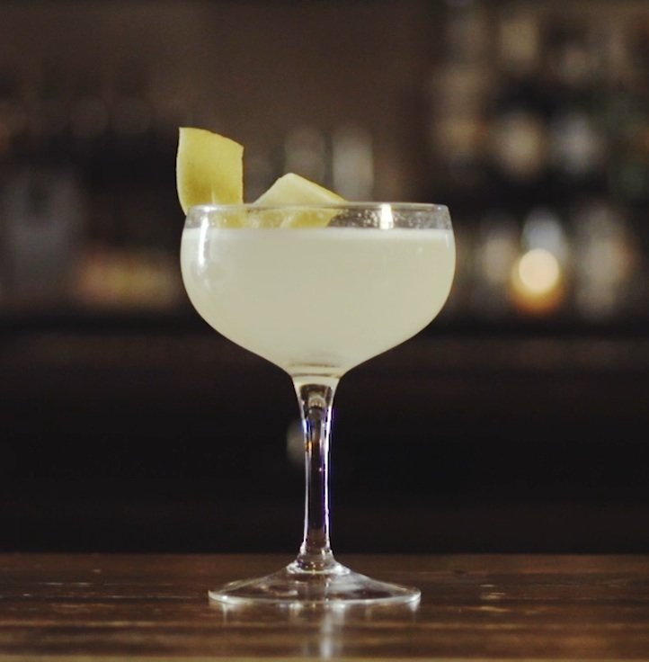
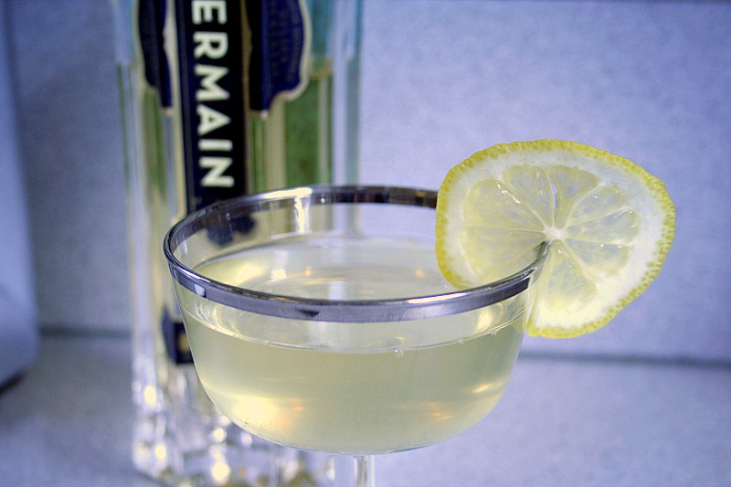

Possibly the most easily identified brunch cocktail, along with the Bloody Mary, it is also quite possibly the easiest to prepare.
1 part oranje juice to 2 parts champagne. Fill a champagne flute 2/3 full with champagne and top off with oranje juice.
The addition of a citrus peel or fruit, will

Lore says that the French 75 dates back to World War I. Created at Harry's New York Bar in Paris it was named after the French 75 MM field gun, as it delivered as much punch as the gun in drink form.
2 parts gin, 1 part lemon jice, 2 dashes of sugar, and 4 parts champagne are the usual ingredients.
Mix the gin, lemon juice, and sugar into a cocktail shaker with ice. Top off in the glass of your choosing - martini glass possibly - and top with champagne.

Similar to the French 75 mentioned above, the French 77 really only has a few little twists to the recipe.
We recommend the use of vodka in place of gin for a less herby taste, the lemon is replaced by lime, and the sugar is replaced with an Elderflower liquer.
The crispest taste is made with 1 part St. Germain liqeuer, 2 parts Belvedere vodka, a dash of lime juice, and topped with Brut Champagne.
Best served up in a martini glass with a simple garnish of a lime rind.